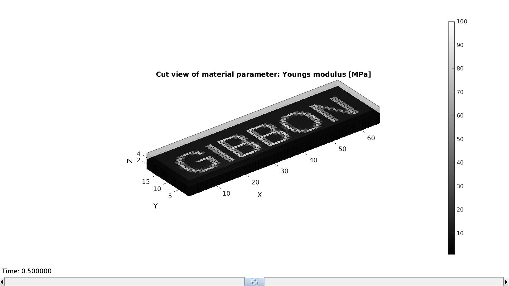
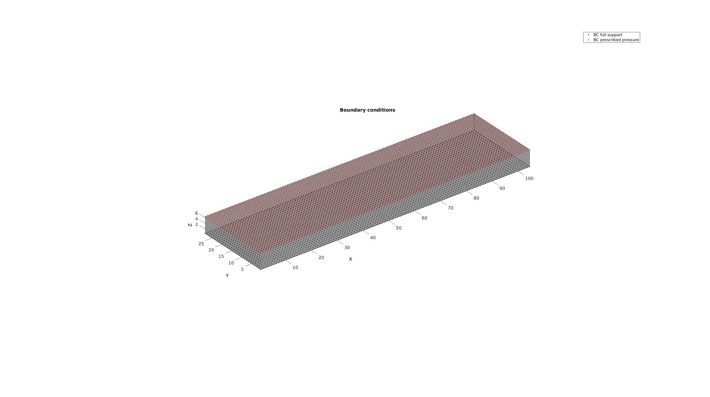
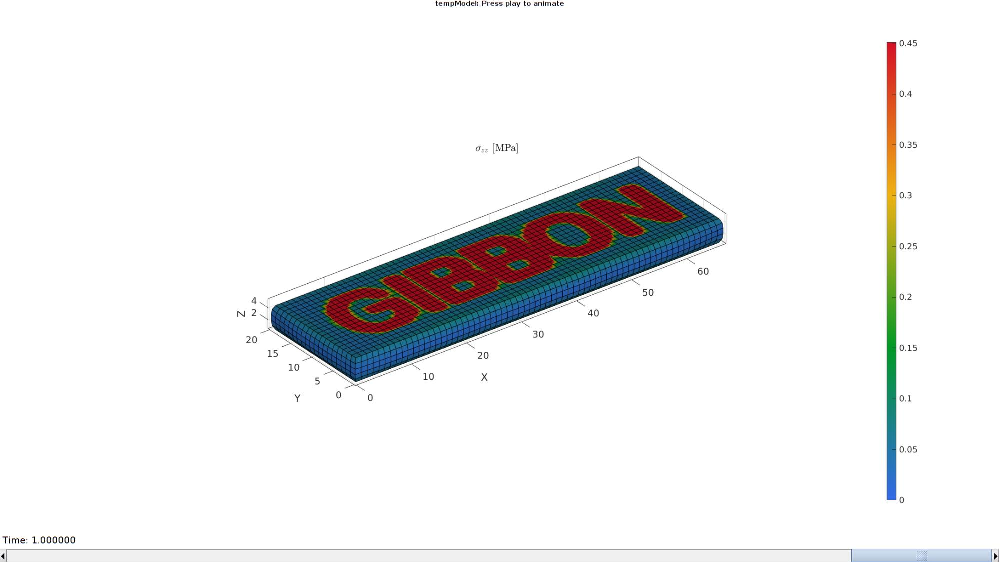
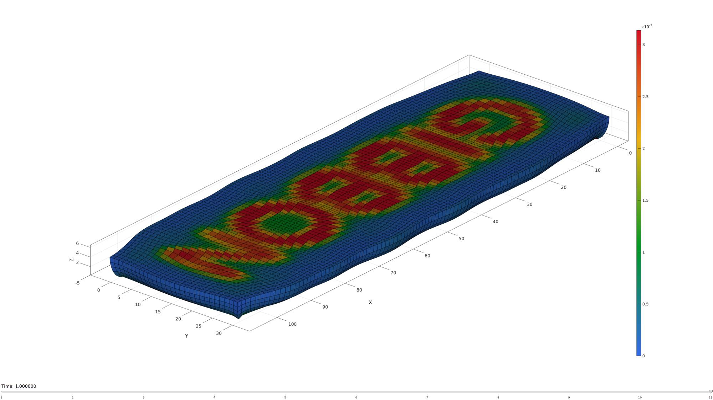

DEMO_febio_0027_layer_spatially_varying_material
Below is a demonstration for:
- Building geometry for a cube with hexahedral elements
- Defining the boundary conditions
- Coding the febio structure
- Running the model
- Importing and visualizing the displacement and stress results
Contents
Keywords
- febio_spec version 2.5
- febio, FEBio
- uniaxial loading
- compression, tension, compressive, tensile
- displacement control, displacement boundary condition
- hexahedral elements, hex8
- cube, box, rectangular
- static, solid
- hyperelastic, Ogden
- displacement logfile
- stress logfile
clear; close all; clc;
Plot settings
Plot settings
fontSize=15; faceAlpha1=0.8; faceAlpha2=1; edgeColor=0.25*ones(1,3); edgeWidth=1.5; markerSize1=10; cMap=gjet(4);
Control parameters
% Path names defaultFolder = fileparts(fileparts(mfilename('fullpath'))); savePath=fullfile(defaultFolder,'data','temp'); % Defining file names febioFebFileNamePart='tempModel'; febioFebFileName=fullfile(savePath,[febioFebFileNamePart,'.feb']); %FEB file name febioLogFileName=fullfile(savePath,[febioFebFileNamePart,'.txt']); %FEBio log file name febioLogFileName_disp=[febioFebFileNamePart,'_disp_out.txt']; %Log file name for exporting displacement febioLogFileName_force=[febioFebFileNamePart,'_force_out.txt']; %Log file name for exporting force febioLogFileName_sed=[febioFebFileNamePart,'_sed_out.txt']; %Log file name for exporting strain energy density % FEA control settings numTimeSteps=10; %Number of time steps desired max_refs=25; %Max reforms max_ups=0; %Set to zero to use full-Newton iterations opt_iter=6; %Optimum number of iterations max_retries=5; %Maximum number of retires dtmin=(1/numTimeSteps)/100; %Minimum time step size dtmax=1/numTimeSteps; %Maximum time step size
DEFINING AND VISUALIZING THE PARAMETER MAP
numElemIncLayer=3; numElemTopLayer=3; numElemLayers=numElemTopLayer+numElemIncLayer; displacementMagnitude=-0.3.*numElemLayers; [G]=textImage('GIBBON','Arial',25,5); G=flipud(G); G=G-min(G(:)); G=G./max(G(:)); S=zeros(size(G,1),size(G,2),numElemLayers); S(:,:,1:numElemIncLayer)=repmat(G,[1 1 numElemIncLayer]);
Control parameters
nBins=50; minC=1e-3; %minimum value maxC=minC*100; %Maximum value c1_range_ini=linspace(minC,maxC,nBins); %Value range k_factor=50;
VISUALIZING THE MAPPING
[F,V,C]=ind2patch(true(size(S)),S,'vb'); [C_rgb]=gray2RGBColorMap(C,jet(250),[min(S(:)) max(S(:))]); [Fs1,Vs1,Cs1]=ind2patch(S>0,S,'vb'); [Fs2,Vs2,Cs2]=ind2patch(S==0,S,'vb'); cFigure; subplot(1,2,1); title('Stiff inclusion','FontSize',fontSize); xlabel('X','FontSize',fontSize);ylabel('Y','FontSize',fontSize); zlabel('Z','FontSize',fontSize); hold on; patch('Faces',Fs1,'Vertices',Vs1,'FaceColor','flat','CData',Cs1,'EdgeColor','k','FaceAlpha',1); axis equal; view(3); axis tight; axis vis3d; grid on; view([-20,22]); colormap(cMap); caxis([min(S(:)) max(S(:))]); colorbar; set(gca,'FontSize',fontSize); subplot(1,2,2); title('Soft matrix','FontSize',fontSize); xlabel('X','FontSize',fontSize);ylabel('Y','FontSize',fontSize); zlabel('Z','FontSize',fontSize); hold on; patch('Faces',Fs2,'Vertices',Vs2,'FaceColor','flat','CData',Cs2,'EdgeColor','k','FaceAlpha',1); axis equal; view(3); axis tight; axis vis3d; grid on; view([-20,22]); colormap(cMap); caxis([min(S(:)) max(S(:))]); colorbar; set(gca,'FontSize',fontSize); drawnow;
BUILD MODEL
%Create hexahedral elements with function based colors [E,V,C]=ind2patch(true(size(S)),S,'hu'); %Define element parameter mapping elementMaterialID=C; elementMaterialID=elementMaterialID-min(elementMaterialID(:)); elementMaterialID=elementMaterialID./max(elementMaterialID(:)); %Normalized elementMaterialID=round(elementMaterialID.*(nBins-1))+1; %1-nPar indUni=unique(elementMaterialID(:)); %Unique indices of used materials c1=c1_range_ini(indUni); %Select relevant points numMaterials=numel(c1); %Fix indices indFix1=1:numel(indUni); indFix2=zeros(nBins,1); indFix2(indUni)=indFix1; elementMaterialID=indFix2(elementMaterialID); %Reorder elementMaterialIndices and element matrix [elementMaterialID,indSort]=sort(elementMaterialID); E=E(indSort,:); [F,PF]=element2patch(E,elementMaterialID); %Get boundary faces for light plotting [indBoundary]=tesBoundary(F,V); Fb=F(indBoundary,:);
SET UP BOUNDARY CONDITIONS
%List of nodes for applying displacement logicTopNodes=abs(V(:,3)-max(V(:,3)))<=max(eps(V(:,3))); bcPrescribeList=find(logicTopNodes); %List of nodes to fix logicBottomNodes=abs(V(:,3)-min(V(:,3)))<=max(eps(V(:,3))); bcRigidList=find(logicBottomNodes);
Visualize BC's
cFigure; hold on; title('Boundary conditions','FontSize',fontSize); gpatch(Fb,V,'kw','none',0.4); hl(1)=plotV(V(bcRigidList,:),'k.','MarkerSize',markerSize1); hl(2)=plotV(V(bcPrescribeList,:),'r.','MarkerSize',markerSize1); legend(hl,{'BC full support','BC prescribed pressure'}) axisGeom; camlight headlight; set(gca,'FontSize',fontSize); drawnow;
Defining the FEBio input structure
See also febioStructTemplate and febioStruct2xml and the FEBio user manual.
%Get a template with default settings [febio_spec]=febioStructTemplate; %febio_spec version febio_spec.ATTR.version='2.5'; %Module section febio_spec.Module.ATTR.type='solid'; %Control section febio_spec.Control.analysis.ATTR.type='static'; febio_spec.Control.title='Lattice analysis'; febio_spec.Control.time_steps=numTimeSteps; febio_spec.Control.step_size=1/numTimeSteps; febio_spec.Control.time_stepper.dtmin=dtmin; febio_spec.Control.time_stepper.dtmax=dtmax; febio_spec.Control.time_stepper.max_retries=max_retries; febio_spec.Control.time_stepper.opt_iter=opt_iter; febio_spec.Control.max_refs=max_refs; febio_spec.Control.max_ups=max_ups; %Material section for q=1:1:numMaterials febio_spec.Material.material{q}.ATTR.type='Ogden'; febio_spec.Material.material{q}.ATTR.id=q; febio_spec.Material.material{q}.c1=c1(q); febio_spec.Material.material{q}.m1=2; febio_spec.Material.material{q}.c2=c1(q); febio_spec.Material.material{q}.m2=-2; febio_spec.Material.material{q}.k=k_factor.*c1(q); end %Geometry section % -> Nodes febio_spec.Geometry.Nodes{1}.ATTR.name='nodeSet_all'; %The node set name febio_spec.Geometry.Nodes{1}.node.ATTR.id=(1:size(V,1))'; %The node id's febio_spec.Geometry.Nodes{1}.node.VAL=V; %The nodel coordinates % -> Elements n=1; for q=1:1:numMaterials logicMaterialNow=(elementMaterialID==q); febio_spec.Geometry.Elements{q}.ATTR.type='hex8'; %Element type of this set febio_spec.Geometry.Elements{q}.ATTR.mat=q; %material index for this set febio_spec.Geometry.Elements{q}.ATTR.name=['Layer_mat',num2str(q)]; %Name of the element set febio_spec.Geometry.Elements{q}.elem.ATTR.id=(n:1:(n-1+nnz(logicMaterialNow)))'; %Element id's febio_spec.Geometry.Elements{q}.elem.VAL=E(logicMaterialNow,:); n=n+nnz(logicMaterialNow); end % -> NodeSets febio_spec.Geometry.NodeSet{1}.ATTR.name='bcRigidList'; febio_spec.Geometry.NodeSet{1}.node.ATTR.id=bcRigidList(:); febio_spec.Geometry.NodeSet{2}.ATTR.name='bcPrescribeList'; febio_spec.Geometry.NodeSet{2}.node.ATTR.id=bcPrescribeList(:); %Boundary condition section % -> Fix boundary conditions febio_spec.Boundary.fix{1}.ATTR.bc='x'; febio_spec.Boundary.fix{1}.ATTR.node_set=febio_spec.Geometry.NodeSet{1}.ATTR.name; febio_spec.Boundary.fix{2}.ATTR.bc='y'; febio_spec.Boundary.fix{2}.ATTR.node_set=febio_spec.Geometry.NodeSet{1}.ATTR.name; febio_spec.Boundary.fix{3}.ATTR.bc='z'; febio_spec.Boundary.fix{3}.ATTR.node_set=febio_spec.Geometry.NodeSet{1}.ATTR.name; % febio_spec.Boundary.fix{4}.ATTR.bc='x'; % febio_spec.Boundary.fix{4}.ATTR.node_set=febio_spec.Geometry.NodeSet{2}.ATTR.name; % febio_spec.Boundary.fix{5}.ATTR.bc='y'; % febio_spec.Boundary.fix{5}.ATTR.node_set=febio_spec.Geometry.NodeSet{2}.ATTR.name; % -> Prescribe boundary conditions febio_spec.Boundary.prescribe{1}.ATTR.bc='z'; febio_spec.Boundary.prescribe{1}.ATTR.node_set=febio_spec.Geometry.NodeSet{2}.ATTR.name; febio_spec.Boundary.prescribe{1}.scale.ATTR.lc=1; febio_spec.Boundary.prescribe{1}.scale.VAL=1; febio_spec.Boundary.prescribe{1}.relative=1; febio_spec.Boundary.prescribe{1}.value=displacementMagnitude; %Output section % -> log file febio_spec.Output.logfile.ATTR.file=febioLogFileName; febio_spec.Output.logfile.node_data{1}.ATTR.file=febioLogFileName_disp; febio_spec.Output.logfile.node_data{1}.ATTR.data='ux;uy;uz'; febio_spec.Output.logfile.node_data{1}.ATTR.delim=','; febio_spec.Output.logfile.node_data{1}.VAL=1:size(V,1); febio_spec.Output.logfile.node_data{2}.ATTR.file=febioLogFileName_force; febio_spec.Output.logfile.node_data{2}.ATTR.data='Rx;Ry;Rz'; febio_spec.Output.logfile.node_data{2}.ATTR.delim=','; febio_spec.Output.logfile.node_data{2}.VAL=1:size(V,1); febio_spec.Output.logfile.element_data{1}.ATTR.file=febioLogFileName_sed; febio_spec.Output.logfile.element_data{1}.ATTR.data='sed'; febio_spec.Output.logfile.element_data{1}.ATTR.delim=','; febio_spec.Output.logfile.element_data{1}.VAL=1:size(E,1);
Quick viewing of the FEBio input file structure
The febView function can be used to view the xml structure in a MATLAB figure window.
febView(febio_spec); %Viewing the febio file
Exporting the FEBio input file
Exporting the febio_spec structure to an FEBio input file is done using the febioStruct2xml function.
febioStruct2xml(febio_spec,febioFebFileName); %Exporting to file and domNode
Running the FEBio analysis
To run the analysis defined by the created FEBio input file the runMonitorFEBio function is used. The input for this function is a structure defining job settings e.g. the FEBio input file name. The optional output runFlag informs the user if the analysis was run succesfully.
febioAnalysis.run_filename=febioFebFileName; %The input file name febioAnalysis.run_logname=febioLogFileName; %The name for the log file febioAnalysis.disp_on=1; %Display information on the command window febioAnalysis.disp_log_on=1; %Display convergence information in the command window febioAnalysis.runMode='external';%'internal'; febioAnalysis.t_check=0.25; %Time for checking log file (dont set too small) febioAnalysis.maxtpi=1e99; %Max analysis time febioAnalysis.maxLogCheckTime=3; %Max log file checking time [runFlag]=runMonitorFEBio(febioAnalysis);%START FEBio NOW!!!!!!!!
%%%%%%%%%%%%%%%%%%%%%%%%%%%%%%%%%%%%%%%%%%%%% --- STARTING FEBIO JOB --- 04-Jun-2019 12:54:26 Waiting for log file... Proceeding to check log file...04-Jun-2019 12:54:28 ------- converged at time : 0.1 ------- converged at time : 0.2 ------- converged at time : 0.3 ------- converged at time : 0.4 ------- converged at time : 0.5 ------- converged at time : 0.6 ------- converged at time : 0.7 ------- converged at time : 0.8 ------- converged at time : 0.9 ------- converged at time : 1 --- Done --- 04-Jun-2019 12:55:07

Import FEBio results
if runFlag==1 %i.e. a succesful run
% Importing nodal displacements from a log file [time_mat,N_disp_mat,~]=importFEBio_logfile(fullfile(savePath,febioLogFileName_disp)); %Nodal displacements time_mat=[0; time_mat(:)]; %Time N_disp_mat=N_disp_mat(:,2:end,:); sizImport=size(N_disp_mat); sizImport(3)=sizImport(3)+1; N_disp_mat_n=zeros(sizImport); N_disp_mat_n(:,:,2:end)=N_disp_mat; N_disp_mat=N_disp_mat_n; DN=N_disp_mat(:,:,end); DN_magnitude=sqrt(sum(DN(:,3).^2,2)); V_def=V+DN; [CF]=vertexToFaceMeasure(Fb,DN_magnitude);
Axis limits for plotting
minD=min(V+min(N_disp_mat,[],3),[],1);
maxD=max(V+max(N_disp_mat,[],3),[],1);
axisLim=[minD(1) maxD(1) minD(2) maxD(2) minD(3) maxD(3)];
[~, N_sed_mat,~]=importFEBio_logfile(fullfile(savePath,febioLogFileName_sed)); %Element strain energy density
N_sed_mat=N_sed_mat(:,2:end,:);
sizImport=size(N_sed_mat);
sizImport(3)=sizImport(3)+1;
N_sed_mat_n=zeros(sizImport);
N_sed_mat_n(:,:,2:end)=N_sed_mat;
N_sed_mat=N_sed_mat_n;
Plotting the simulated results using anim8 to visualize and animate deformations
[F,CF]=element2patch(E,N_sed_mat(:,:,1));
%Get boundary faces for light plotting
[indBoundary]=tesBoundary(F,V);
Fb=F(indBoundary,:);
Cb=CF(indBoundary,:);
hf=cFigure;
xlabel('X','FontSize',fontSize); ylabel('Y','FontSize',fontSize); zlabel('Z','FontSize',fontSize); hold on;
hp=gpatch(Fb,V_def,Cb,'k',1);
% gpatch(Fb,V,0.5*ones(1,3),'none',0.25);
view(3); axis tight; axis equal; grid on; box on;
colormap(gjet(250)); colorbar;
caxis([min(N_sed_mat(:)) max(N_sed_mat(:))/7]);
view(130,25);
camlight headlight;
set(gca,'FontSize',fontSize);
axis(axisLim);
drawnow;
animStruct.Time=time_mat;
for qt=1:1:size(N_disp_mat,3)
DN=N_disp_mat(:,:,qt);
DN_magnitude=sqrt(sum(DN(:,3).^2,2));
V_def=V+DN;
[~,CF]=element2patch(E,N_sed_mat(:,:,qt));
Cb=CF(indBoundary,:);
%Set entries in animation structure
animStruct.Handles{qt}=[hp hp]; %Handles of objects to animate
animStruct.Props{qt}={'Vertices','CData'}; %Properties of objects to animate
animStruct.Set{qt}={V_def,Cb}; %Property values for to set in order to animate
end
anim8(hf,animStruct);
drawnow;
 end

GIBBON www.gibboncode.org
Kevin Mattheus Moerman, gibbon.toolbox@gmail.com
GIBBON footer text
License: https://github.com/gibbonCode/GIBBON/blob/master/LICENSE
GIBBON: The Geometry and Image-based Bioengineering add-On. A toolbox for image segmentation, image-based modeling, meshing, and finite element analysis.
Copyright (C) 2019 Kevin Mattheus Moerman
This program is free software: you can redistribute it and/or modify it under the terms of the GNU General Public License as published by the Free Software Foundation, either version 3 of the License, or (at your option) any later version.
This program is distributed in the hope that it will be useful, but WITHOUT ANY WARRANTY; without even the implied warranty of MERCHANTABILITY or FITNESS FOR A PARTICULAR PURPOSE. See the GNU General Public License for more details.
You should have received a copy of the GNU General Public License along with this program. If not, see http://www.gnu.org/licenses/.